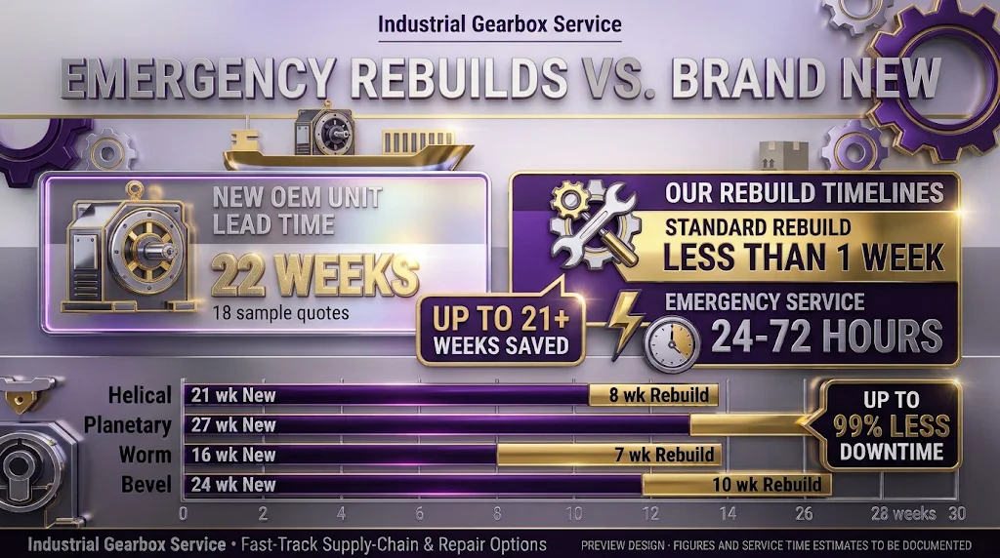

Median quoted lead time · new OEM unit
22 weeks
Example only · 18 synthetic quotesA transparent comparison format for quoted lead times on new gearbox units and turnaround times for completed rebuilds. A real edition should show the underlying scope, definitions, and sample sizes alongside every figure.
A concise reading of the example results.
In this synthetic demonstration dataset, the median quoted lead time for a new unit is 22 weeks, compared with a 9-week median turnaround across the example rebuild jobs. The difference between those two summary figures is 13 weeks.
These are separate groups of records, not matched new-versus-rebuild proposals for the same gearbox. The example does not establish that a rebuild will be faster, suitable, or less costly for a particular application. The under-one-week emergency capability shown separately is not included in these synthetic figures.
Example summary cards show how a completed edition could read.

Example table values are fictional; a real release would show its sample counts and scope.
| Gearbox type | OEM quotes | New unit · median (IQR; range) | Rebuild jobs | Rebuild · median (IQR; range) |
|---|---|---|---|---|
| Helical | 6 | 22 weeks IQR 1.5 · 18–30 | 5 | 8 weeks IQR 2 · 6–11 |
| Planetary | 4 | 27 weeks IQR 9 · 18–36 | 3 | 12 weeks IQR 3 · 9–15 |
| Worm | 5 | 16 weeks IQR 5 · 12–20 | 4 | 7 weeks IQR 2.5 · 5–9 |
| Bevel | 3 | 24 weeks IQR 6 · 18–30 | 4 | 10 weeks IQR 3 · 7–13 |
Illustrative data only. IQR is Q3 minus Q1; range is minimum to maximum. Synthetic quartiles use the inclusive linear-interpolation method (Type 7). Small samples make spreads unstable, so they would be prominently caveated in a real release.
These statements describe only the synthetic values shown in this sample edition.
Example chart uses the fictional values in the table above. Scale: weeks.
Factors to document for each record—not a claim that one path is always quicker.
Ratio, torque, mounting, shaft arrangement, materials, and custom options can change what is being quoted. Capture the configuration and quote date.
A rebuild schedule can change after teardown reveals damage or additional work. Record inspection, approval, parts-order, machining, assembly, and test milestones separately.
A shipment estimate is not the same as delivery to site. A shop-ready date is not the same as return to service. The index must define the exact endpoints.
These are candidate explanatory variables for a future dataset. They are not findings from the fictional example values.
The sample rules below show how a real edition should define and report its records.
Proposed cadence: target publication on the second Tuesday after quarter-end, only after data review is complete; delay the release if quality checks are unfinished. This is a draft schedule, not an established commitment. Read the proposed methodology.
Limitations: the sample is synthetic, unpaired, and not representative of the industry. A real index would describe only the documented records supplied for that edition; it could not predict an individual order or determine whether rebuild is technically suitable.
Published vendor statements can inform background research, but they are not mixed into the company’s own record set.
Public lead-time statements vary by vendor, product, configuration, and the date they were published. They should be attributed to the source and kept separate from any company-observed dataset.
These references are not independent market benchmarks and are not represented as endorsements or affiliations.
Built for readers who want to quote the source accurately.
Potential story angles for a future verified release:
Do not report the synthetic values above as company results or market-wide facts.
Download sample two-page PDFA future measured edition should include a release date, data window, and version.
The embedded chart is a synthetic sample and includes a visible attribution link to this index. Embedding can make the source easier to cite; it does not guarantee backlinks.
<iframe src="https://industrialgearboxservice.com/industrial-gearbox-lead-time-index/chart-embed.html" title="Industrial gearbox lead-time comparison" width="100%" height="360" loading="lazy" style="border:0"></iframe>
Direct answers for maintenance, reliability, and procurement teams. Sample figures remain synthetic.
It is designed to summarize dated new-unit gearbox quotes and completed rebuild turnaround records by gearbox type. This sample page uses synthetic data; it contains no actual quote or job records.
No. A real edition would represent only the documented records in its stated scope. It should not be generalized to the entire gearbox market.
No. All table, chart, and headline statistics are synthetic examples created to demonstrate the layout. They are not company performance or market findings.
The proposed measure is the time from a dated quote to its quoted shipment-ready date. A published edition must say whether the quote refers to shipment, delivery, or another milestone.
The proposed measure is elapsed time from gearbox receipt at the shop to completion of the stated test and readiness to ship. It does not mean delivered, installed, or returned to service.
Industrial Gearbox Service has stated that it can complete some emergency rebuilds in less than one week. The timing depends on the specific repair, findings, parts, approvals, and schedule; request a job-specific timeline.
No. The under-one-week statement refers to emergency service capability. It must be kept separate from routine turnaround statistics and reported only with its qualifying conditions.
No. That range appears in the supplied concept graphic, but it has not been confirmed as a service commitment in this sample edition. Verify its clock, availability, and conditions before using it publicly.
No. The graphic’s “up to 99% less downtime” statement is unsupported here and has been flagged for removal or substantiation. Downtime depends on the actual failure, work scope, logistics, and restart needs.
The comparison can help teams frame a planning discussion about timing. It is not a technical suitability assessment, matched bid comparison, cost analysis, or promise about a specific unit.
Not in this sample. The two groups are independent. A matched comparison would require equivalent gearbox specifications and scope documented for both options.
The median is the middle ordered observation and is less affected by extreme values than a mean. It still needs the sample count, range, and scope to be interpreted responsibly.
The interquartile range (IQR) is the third quartile minus the first quartile. It describes the middle half of observed values; it is not a confidence interval or a prediction.
The observed range shows the shortest and longest records in the included sample. Outliers and small sample sizes can make the range change substantially between editions.
The count, shown as n, is the number of eligible quote or job records used for a statistic. It helps readers judge how much evidence supports the summary.
Small samples provide limited evidence and can produce unstable medians and spreads. A real release should set a reporting rule in advance and mark or omit groups that do not meet it.
The design groups records as helical, planetary, worm, and bevel. A real edition should classify each unit from its documentation and publish the exact scope.
They should be separated from standard classes or excluded from those summaries. Mixing a one-off configuration into a broad type can make the comparison hard to interpret.
No range has been established in this sample edition. A real edition should derive and report horsepower and torque coverage from eligible records instead of inventing cutoffs.
The geographic scope has not been set. A published edition should name the actual regions represented and avoid describing a local sample as national.
No. Timeline alone cannot establish technical suitability. Inspection results, condition, load, failure mode, parts, cost, warranty, and operating requirements need qualified review.
No. It is a lead-time and turnaround comparison concept, not a price index. Freight, installation, outage cost, scope, and warranty are outside the sample calculations.
Not necessarily. The proposed clock ends at shipment-ready status. A real edition must state whether transit and delivery are included and keep unlike endpoints separate.
The proposed rebuild clock uses elapsed time from receipt to ready-to-ship, including waits. If reliable milestone dates exist, an edition can also show where time was spent.
The draft protocol keeps the latest eligible revision for the same supplier and configuration, with the rule and excluded count disclosed. Final rules should be fixed before calculation.
No identifying information should appear in public downloads. A real dataset should be screened to remove customer, plant, serial, quote, and commercially sensitive details.
The proposed cadence is quarterly, targeting the second Tuesday after quarter-end only when data review is complete. If review is not complete, publication should be delayed.
The CSV and PDF are synthetic design samples only. Do not cite them as actual service results; a real edition should publish its version, window, source, and reuse terms.
An embed option is planned for the live page. Embedding may make the source easier to access, but it does not guarantee that another publisher will create a backlink.
No. Dataset markup can describe a real dataset for discovery, but Google does not guarantee search display. FAQ rich results are generally limited to well-known authoritative government and health sites; visible, useful answers matter more for this commercial page.